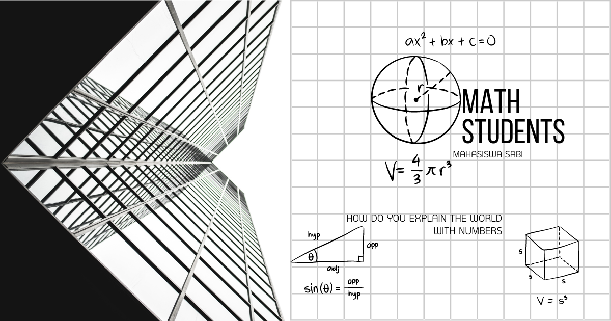

Rivalitas Matematika
Rivalitas Matematika: Kompetisi Pemikiran Logis dan Strategi dalam Dunia Matematika
Dalam major studi Matematika, mata kuliah atau kajian Rivalitas Matematika dapat dipahami sebagai pembelajaran yang berfokus pada kompetisi intelektual, strategi penyelesaian masalah, dan pengembangan kemampuan berpikir kritis melalui tantangan matematika. Bidang ini sering dikaitkan dengan olimpiade matematika, problem solving tingkat lanjut, serta analisis berbagai pendekatan dalam menyelesaikan persoalan matematis.
Melalui rivalitas matematika, mahasiswa dilatih untuk berpikir cepat, logis, kreatif, dan sistematis dalam menghadapi masalah yang kompleks. Selain meningkatkan kemampuan akademik, bidang ini juga membantu membangun mental kompetitif, kemampuan analitis, dan ketelitian yang sangat dibutuhkan dalam dunia riset maupun industri modern.
Apa Itu Rivalitas Matematika?
Rivalitas Matematika merupakan kajian yang berhubungan dengan kompetisi, strategi pemecahan masalah, dan pengembangan kemampuan berpikir matematis melalui tantangan dan analisis soal tingkat lanjut.
Konsep ini menekankan kemampuan menemukan solusi yang efektif, efisien, dan kreatif dalam berbagai persoalan matematika, baik secara individu maupun kelompok.
Fokus Pembelajaran Rivalitas Matematika
Kajian ini mempelajari berbagai teknik dan strategi penyelesaian masalah matematika yang membutuhkan kemampuan analisis tingkat tinggi. Beberapa materi utama yang dipelajari meliputi:
- Strategi problem solving dalam penyelesaian soal matematika kompleks.
- Logika dan penalaran matematis untuk analisis sistematis.
- Teknik olimpiade matematika pada aljabar, geometri, kombinatorika, dan teori bilangan.
- Manajemen waktu dan strategi kompetisi dalam tantangan matematika.
- Analisis berbagai metode penyelesaian untuk memperoleh solusi optimal.
Mahasiswa juga dilatih mengembangkan kreativitas matematis dan kemampuan berpikir cepat dalam menghadapi persoalan yang membutuhkan pendekatan non-rutin.
Peran dalam Major Studi Matematika
Dalam studi Matematika, rivalitas matematika berperan penting dalam meningkatkan kemampuan berpikir kritis, analitis, dan kompetitif mahasiswa.
Kajian ini juga membantu mahasiswa memperdalam pemahaman konsep matematika melalui latihan intensif dan eksplorasi berbagai strategi penyelesaian masalah.
Kegunaan dalam Masyarakat, Riset, dan Dunia Kerja
Rivalitas matematika memiliki banyak manfaat karena melatih kemampuan pemecahan masalah dan pengambilan keputusan secara cepat dan tepat. Penerapannya dapat ditemukan pada:
- Pendidikan dan olimpiade untuk pengembangan kemampuan akademik.
- Data science dan teknologi dalam analisis logis dan algoritma.
- Riset ilmiah yang membutuhkan pemikiran sistematis dan kreatif.
- Dunia kerja modern yang memerlukan kemampuan analisis dan problem solving tinggi.
Karena itu, kemampuan yang dibangun melalui rivalitas matematika sangat berguna dalam bidang teknologi, penelitian, keuangan, hingga pengembangan artificial intelligence.
Teknologi dan Software Pendukung
Dalam pembelajaran rivalitas matematika, mahasiswa sering menggunakan berbagai platform dan software seperti GeoGebra, Wolfram Mathematica, Python, dan aplikasi latihan olimpiade matematika digital.
Teknologi tersebut membantu proses simulasi, visualisasi konsep, latihan soal interaktif, dan eksplorasi strategi penyelesaian masalah secara lebih efektif.
Tren Terkini dalam Rivalitas Matematika
Saat ini, rivalitas matematika berkembang bersama kemajuan platform pembelajaran digital, kompetisi online, dan artificial intelligence. Banyak pelatihan matematika modern menggunakan simulasi digital dan analisis berbasis komputer.
Selain itu, integrasi matematika kompetitif dengan coding challenge, machine learning, dan computational thinking juga semakin populer dalam pendidikan dan pengembangan talenta teknologi masa depan.
Kesimpulan
Rivalitas Matematika merupakan kajian dalam major studi Matematika yang berfokus pada pengembangan kemampuan problem solving, logika, dan strategi penyelesaian masalah matematika tingkat lanjut.
Dengan kombinasi kreativitas, analisis, dan pemikiran kompetitif, bidang ini menjadi sarana penting untuk membangun kemampuan akademik dan profesional yang relevan di era teknologi modern.
Mahasiswa Sabi
©Repository Muhammad Surya Putra Fadillah